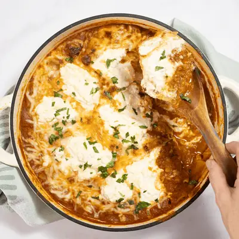

30-Minute Skillet Lasagna with Hidden Veggies

Ingredients
- 9 large lasagna noodles, (or 8oz of other big-shaped pasta)
- 1 tbsp olive oil
- 1/2 lb ground beef, (can also use ground turkey )
- 1 tsp Italian Seasoning
- 1/2 tsp garlic powder
- 1/2 tsp onion powder
- 1/2 tsp salt
- 1 24 oz jar of pasta sauce, (I used the Trader Joe’s Tomato Basil Marinara sauce)
- 1 cup carrots, (peeled and roughly chopped)
- 1 cup zucchini, (roughly chopped)
- 1 cup water
- 3/4 cup mozzarella or Italian cheese blend, (shredded)
- 3/4 cup ricotta cheese
- 1/4 cup Parmesan, (plus more for serving)
- 1 tbsp fresh basil, (finely chopped (optional)
Steps
- Cook Pasta: Bring a medium saucepan full of water to a boil. Break the lasagna noodles into small 2-3-inch pieces (they don’t have to be even) and cook for the shortest time listed on the package directions. Drain.
- Brown Beef: While the pasta is cooking, heat a medium oven-safe skillet over medium heat and add olive oil. Add the ground beef and cook until browned, about 5-6 minutes. Drain any excess grease, then add the Italian seasoning, garlic powder, onion powder, and salt, and stir to combine. Turn the heat to medium-low.
- Blend Sauce: While the meat browns, add the tomato sauce, carrots, zucchini, and water to a blender and blend for 60 seconds, or until smooth.
- Combine Sauce/Meat: When the meat is browned, add the tomato/veggie sauce and bring to a slight boil, it will be slightly liquidy, but the noodles will absorb the excess liquid.Note: Since all jarred pasta sauces have different spices, this is the time to taste the sauce in case you need to add more seasoning.
- Add Noodles: Add the cooked pasta and stir, then simmer for 2-3 minutes while you make the ricotta.
- Preheat the oven to Broil.
- Make Ricotta: In a small bowl, stir together the ricotta and Parmesan. Spoon the ricotta over the noodles and sprinkle with mozzarella.
- Broil: Place the skillet on the top rack of the oven and broil for 3-4 minutes, or until the cheese is bubbly and browned.
- Eat: Let cool for a few minutes. Then sprinkle with basil (if using) and Parmesan before serving.
Recipe by Baby Foode, from Baby Foode. Saved here for personal use; the original has the full notes, tips and photos. Open original